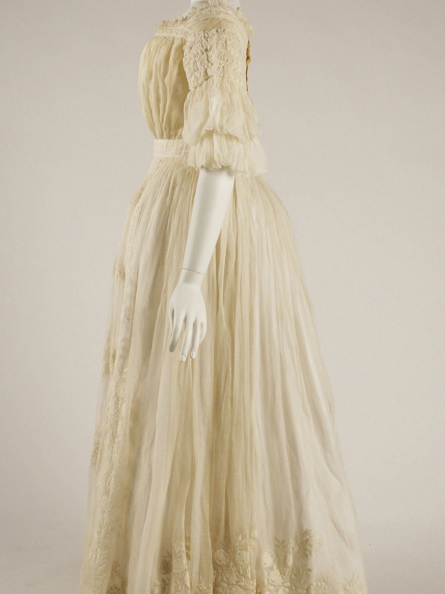

March 2026
Notes from the Archway
On a copper gown, and shooting at the hour the stone goes warm
The dress was finished in March and photographed in June, which is the only reason it looks like that. We had waited for the light rather than the deadline — the stone behind it holds the sun for about twenty minutes and then lets it go all at once.